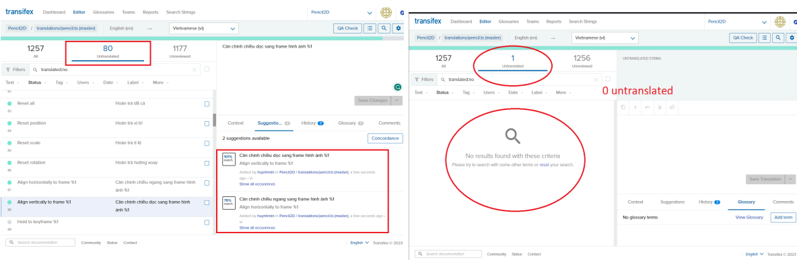
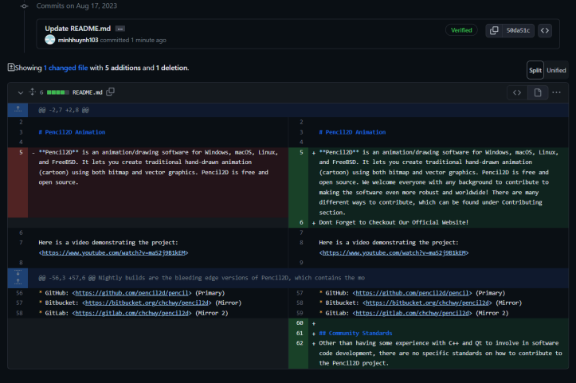

Pencil2D Open Source Contributions
Landing page redesign and Vietnamese localization, both merged to production
About the project
Pencil2D is an open source animation software designed for creating 2D animations with a simple and intuitive interface. The tool is versatile and suitable for both beginners and experienced animators that works with Windows, macOS, Linux, and FreeBSD. The project has been actively developed by a community of contributors for years, has over 50+ contributors, more than 5.5k members, and an active Discord and forum.
I started contributing through a course on open source development. The project intrigued me with its community-driven approach and the opportunity to work on a real-world application. It is aimed at beginners and hobbyists who want to create engaging 2D animations without the complexity of professional software. The gap between what the project intends and what a new user actually experiences turns out to be significant, which motivated my contributions.
My contributions
I started by testing the project rather than changing it. I ran a cognitive walkthrough using a GenderMag persona, walking through installation, first-time user experience, and switching between different interface languages while tracking places they encountered difficulties. The final step I setup a meeting with a real user, a university student in Vietnam who is not a programmer, and recorded the session with her attempting the same tasks.
Both encounter found similar challenges, which is no installation guide for someone who has never unzipped a file before. The README has no link to the tutorial and the option to change language is not documented in the User's Guide. My participant eventually switched the language to Vietnamese, but it took long enough that most people would have given up.
I then fixed two issues: completing the remaining untranslated strings in the Vietnamese translation on Transifex and updating the documentation to include the language switching instructions. I reached out to the admins for my approach and they approved my work. After a few weeks, they merged the changes into the main branch.
Separately I asked the moderators whether I could improve the introductory documentation, and after they approved I opened a pull request updating the README with a welcome section explaining that contributions of any background are wanted, and a Community Standards section explaining what experience is actually needed. That was my first pull request to an open source project.
Skills demonstrated
Usability testing · Cognitive walkthrough · GenderMag · Localization and i18n · Transifex · Technical writing · Git and GitHub pull request workflow · Vietnamese and English
Results
The Vietnamese localization is live in the application, so Vietnamese users can now use Pencil2D fully in their preferred language. The README changes are in the project's main branch and are the first thing anyone sees when they open the repository. The usability report itself did not get picked up by the maintainers, which is a common outcome when an unsolicited report from a newcomer competes with an existing backlog. The changes that landed were small but concrete. That taught me as much as the research did about how contributions actually get accepted in an open source project.
Visuals

